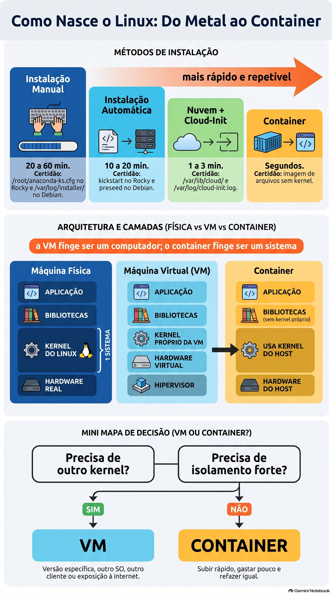
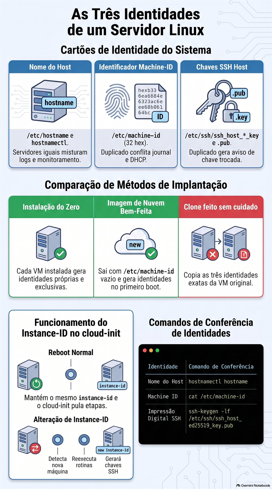
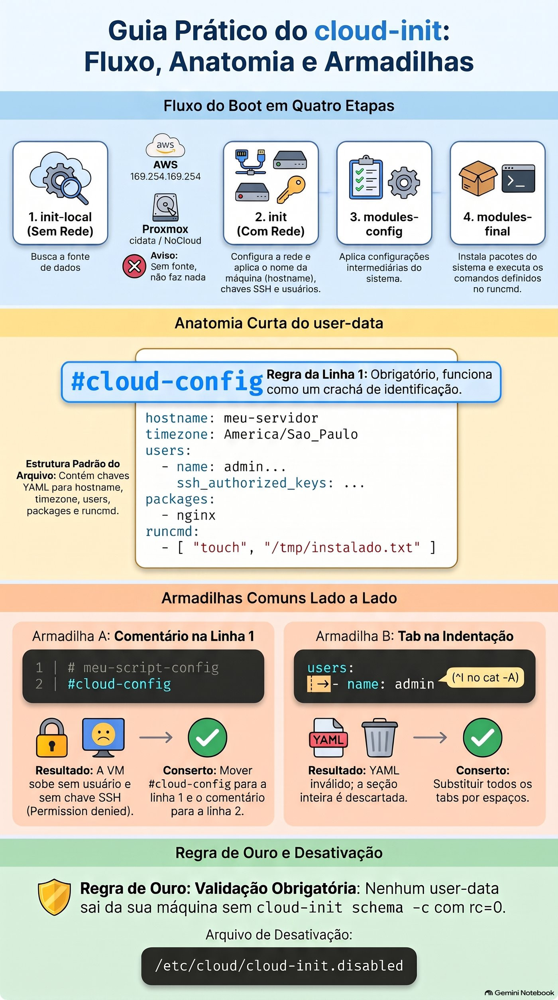

Aula 2.1 · Instalação e provisionamento
Primeira aula do Módulo 2. Na Aula 0.1 você instalou o Rocky e o Debian à mão, tela por tela. Funcionou, e levou uma hora. Agora imagine o pedido de verdade: "preciso de seis servidores web iguais até amanhã, e daqui a três meses mais seis". Ninguém faz isso pelo instalador. Hoje você aprende as quatro formas de um Linux nascer (instalação manual, instalação automática, imagem de nuvem com cloud-init e container), descobre como cada uma deixa rastro no sistema e, principalmente, aprende a escolher. No fim, você olha para qualquer servidor e diz de onde ele veio.
| Ficha | Aula 2.1 |
|---|---|
| Módulo | M2 · Sistema, usuários e permissões, aula 1 de 8 |
| Quando | Semana 4 |
| Ao final você consegue | Dizer se um Linux roda em máquina física, VM ou container, e como ele foi instalado; ler o rastro do instalador no Rocky e no Debian; explicar por que hostname, machine-id e chaves SSH do host precisam ser únicos; escolher entre instalação manual, automática, imagem de nuvem e container para um pedido real; escrever e validar um user-data do cloud-init sem rodá-lo; mostrar, com um comando, que um container usa o kernel do host |
| Itens de prova | LE 014.1 (escolher um sistema, ciclo de vida das distribuições) · LE 011.4 (nuvem e virtualização) · LPIC-1 102.6 (Linux como convidado de virtualização: VM, container, cloud-init, machine-id, chaves SSH do host) · LPIC-1 102.1 (visão inicial do layout de disco) |
| Pré-requisitos | Aulas 0.1 e 0.2 (as VMs e o acesso SSH); Aula 1.10 (systemd-detect-virt) |
| Tempo | Cerca de 2h30 |
| Snapshots | m2a1-inicio e m2a1-fim nas duas VMs |
1 · Aquecimento
Três perguntas, de cabeça. Escreva as respostas; o Gabarito confere no fim.
- Na Aula 1.10, o que o
systemd-detect-virtmostrou nas suas VMs, e o que ele mostraria num servidor físico? - Na Aula 0.1, você escolheu no instalador do Rocky o disco, a rede, o fuso e os usuários. Palpite: o instalador guardou essas respostas em algum lugar depois de terminar?
- Palpite: um container Debian rodando dentro da rocky-lab. O
uname -rdentro dele mostra o kernel do Debian ou o do Rocky?
2 · Por que importa
Num cliente com 40 servidores, um dia alguém pergunta: "esse servidor foi instalado como? Se ele morrer, conseguimos refazer igual?". Se a resposta for "alguém instalou à mão em 2019 e foi mexendo", ninguém sabe refazer. Se for "nasceu de uma imagem com este arquivo de cloud-init, que está no Git", refazer leva dez minutos.
O mesmo vale para o erro mais comum de quem começa a usar virtualização: instalar uma VM caprichada e clonar dez vezes. As dez nascem com o mesmo machine-id, as mesmas chaves SSH do host e o mesmo nome. O monitoramento mistura as máquinas, o SSH do seu notebook grita REMOTE HOST IDENTIFICATION HAS CHANGED a cada servidor, e, dependendo do cliente DHCP, duas delas brigam pelo mesmo IP. Tudo isso tem nome, tem causa e tem conserto, e começa nesta aula.
E há a pergunta de todo projeto novo: "isso vira VM ou container?". O DeepTutor que você usa no curso roda num CT do Proxmox, um container. As suas VMs do lab são VMs. Hoje você entende por que cada um está onde está.
3 · Modelo mental
Todo Linux nasce de um destes quatro jeitos, e cada jeito deixa uma certidão de nascimento no disco. Quanto mais para a direita, mais rápido e repetível, e menos você conversa com o instalador.
| Jeito | Como nasce | Quanto demora | Repetível? | Certidão que fica |
|---|---|---|---|---|
| Instalação manual | ISO, instalador, você responde as telas | 20 a 60 min | Não: cada uma sai um pouco diferente | /root/anaconda-ks.cfg no Rocky, /var/log/installer/ no Debian |
| Instalação automática | ISO + arquivo de respostas (kickstart no Rocky, preseed no Debian) | 10 a 20 min, sem ninguém olhando | Sim | As mesmas, com as respostas do arquivo |
| Imagem de nuvem + cloud-init | Um disco pronto e genérico; no primeiro boot, o cloud-init lê um arquivo e personaliza | 1 a 3 min | Sim, e é o padrão em nuvem | /var/lib/cloud/, /var/log/cloud-init.log |
| Container | Uma imagem de arquivos, sem kernel, que roda sobre o kernel do host | Segundos | Sim | /run/.containerenv (Podman) ou /.dockerenv (Docker); systemd-detect-virt diz podman, docker ou lxc |
E onde cada um roda:
máquina física VM (KVM no Proxmox) container
┌──────────────────┐ ┌─────────────────────────┐ ┌──────────────────────────┐
│ aplicação │ │ aplicação │ │ aplicação │ aplicação │
│ bibliotecas │ │ bibliotecas │ │ bibliotecas│ bibliotecas │
│ KERNEL do Linux │ │ KERNEL próprio da VM │ │ (sem kernel próprio) │
│ │ │ hardware virtual (virtio)│ ├──────────────────────────┤
│ │ ├─────────────────────────┤ │ KERNEL do host, um só │
│ hardware real │ │ hipervisor + hardware │ │ hardware (real ou VM) │
└──────────────────┘ └─────────────────────────┘ └──────────────────────────┘
1 sistema vários kernels, isolados um kernel, vários "mundos"A frase para levar: a VM finge ser um computador; o container finge ser um sistema. A VM tem kernel próprio e pode rodar Windows ao lado de Linux. O container divide o kernel do host e só pode rodar Linux sobre Linux, mas sobe em segundos e gasta quase nada.


4 · Conceito em camadas
Essencial
Escolher um sistema. Antes de instalar, alguém decidiu qual sistema. Para servidor, a pergunta não é "qual é o melhor Linux", e sim "quanto tempo esta versão recebe correções de segurança, e quem me ajuda se der problema":
| Sistema | Ciclo de vida | Quando faz sentido |
|---|---|---|
| Rocky Linux 9 | Correções até maio de 2032, cerca de dez anos por versão maior | Servidores que precisam ficar anos iguais; programas certificados para RHEL |
| Debian 13 | Cerca de três anos de suporte normal e mais dois de LTS, até 2030 | Servidores enxutos, base do Proxmox, quem prefere a comunidade |
| Ubuntu LTS | Cinco anos grátis, mais com assinatura | Nuvem pública, onde é a imagem mais comum |
| Fedora, Arch | Lançamento a cada seis meses, ou contínuo (rolling) | Desktop e testes, raramente servidor |
| Windows Server, macOS | Ciclos do fabricante, licença paga | Active Directory e aplicações Windows; macOS quase só no desktop |
LTS quer dizer Long Term Support: uma versão que recebe correções por muitos anos, sem mudar de versão maior. Rolling quer dizer que não existe "versão": o sistema se atualiza continuamente. Em servidor de cliente, você quer LTS.
As quatro formas de instalar, na ordem em que você vai encontrá-las:
- Manual. Você boota a ISO e responde o instalador: o Anaconda no Rocky, o
debian-installerno Debian. Bom para a primeira vez, para um servidor físico único e para aprender. Ruim para fazer de novo igual. - Automática. O mesmo instalador, mas as respostas vêm de um arquivo. No Rocky, é o kickstart; no Debian, o preseed. O Anaconda até te dá o primeiro de presente: depois de toda instalação, ele grava as suas respostas em
/root/anaconda-ks.cfg, pronto para repetir a instalação. - Imagem de nuvem com cloud-init. Alguém já instalou o sistema, limpou tudo o que é único (nome, chaves, machine-id) e guardou o disco como imagem genérica:
Rocky-9-GenericCloud.qcow2,debian-13-genericcloud-amd64.qcow2. Você cria a VM a partir desse disco. No primeiro boot, o cloud-init procura as instruções (nome, usuário, chave SSH, pacotes, rede) e personaliza a máquina. É assim em AWS, Azure, Google Cloud, OpenStack, e também no Proxmox, com o drive de cloud-init que você vai usar no Módulo 17. - Container. Não se instala sistema. Você baixa uma imagem de arquivos (
debian:trixie,rockylinux:9) e roda um processo isolado sobre o kernel que já existe. Com Podman ou Docker, é um container de aplicação: um processo principal, uma função. Com LXC, como os CTs do Proxmox, é um container de sistema: temsystemd, vários serviços e parece uma VM, mas o kernel continua sendo o do host.
VM ou container? Duas perguntas resolvem quase sempre:
- Precisa de outro kernel? Windows, um kernel de versão específica, módulos próprios, um firewall com regras de kernel só suas: VM.
- Precisa de isolamento forte, porque é de outro cliente ou exposto à internet? Na dúvida, VM. Um erro grave no kernel atinge todos os containers daquele host; numa VM, atinge só a VM.
Se as duas respostas forem "não", e você quer subir rápido, gastar pouco e refazer sempre igual, container.
Intermediário
A certidão de nascimento. Cada forma de instalar deixa pistas. Você vai procurá-las no lab:
| Pista | Onde | O que diz |
|---|---|---|
/root/anaconda-ks.cfg | Rocky | As respostas do instalador, em formato kickstart: idioma, teclado, disco, rede, fuso, pacotes |
/var/log/anaconda/ | Rocky | Os logs da instalação, se algo deu errado nela |
/var/log/installer/ | Debian | Os logs do debian-installer, o resumo do hardware e as respostas |
/var/lib/cloud/instance/ | Qualquer um com cloud-init | A instância que o cloud-init configurou e o que ele recebeu |
/var/log/cloud-init.log | Qualquer um com cloud-init | Tudo o que ele fez no boot, passo a passo |
stat -c '%w' / | Qualquer um | A data em que o sistema de arquivos da raiz foi criado, ou seja, a instalação |
As três identidades de uma instalação. Todo Linux tem três coisas que precisam ser únicas na rede:
| Identidade | Onde fica | Criada quando | Se dois servidores tiverem a mesma |
|---|---|---|---|
| Nome (hostname) | /etc/hostname; hostnamectl mostra | Na instalação, ou pelo cloud-init | Monitoramento e logs misturam as duas máquinas |
| machine-id | /etc/machine-id, 32 caracteres hexadecimais | No primeiro boot, se o arquivo estiver vazio | O journal, o DHCP do systemd-networkd e outras ferramentas acham que são a mesma máquina; o Debian pode até pegar o mesmo IP |
| Chaves SSH do host | /etc/ssh/ssh_host_*_key e .pub | Na instalação, ou no primeiro boot | Quem conecta não sabe mais com quem está falando, e o aviso de chave trocada vira ruído que todos ignoram |
Uma imagem de nuvem bem feita sai de fábrica com o /etc/machine-id vazio e sem chaves SSH do host, para que cada VM gere as suas no primeiro boot. Um clone feito sem cuidado leva as três identidades da original. O desafio do Módulo 5 é justamente consertar um clone desses.
Como o cloud-init trabalha. Ele roda só no boot, em quatro etapas: init-local (antes da rede, procura a fonte de dados), init (com rede: nome, chaves SSH, usuários), modules-config (configurações) e modules-final (pacotes e os seus comandos do runcmd). A fonte de dados (datasource) é de onde ele lê as instruções: na AWS, um endereço especial, 169.254.169.254; no Proxmox, um CD-ROM virtual chamado cidata (o tipo NoCloud). Se não acha fonte nenhuma, ele não faz nada.
As instruções são o user-data, quase sempre um YAML que começa obrigatoriamente com a linha #cloud-config:
#cloud-config
hostname: web01
timezone: Europe/Rome
users:
- name: rodrigo
groups: [wheel]
sudo: "ALL=(ALL) NOPASSWD:ALL"
shell: /bin/bash
ssh_authorized_keys:
- ssh-ed25519 AAAAC3...sua-chave-publica rodrigo@notebook
packages:
- chrony
runcmd:
- [systemctl, enable, --now, chronyd]Linha por linha: o nome da máquina; o fuso; um usuário rodrigo, no grupo wheel (o grupo do sudo no Rocky), com sudo sem senha e a sua chave pública; o pacote chrony instalado; e um comando no fim do primeiro boot. Repare que não há senha nenhuma: o acesso é só pela chave. É o padrão em nuvem, e é o motivo de o NOPASSWD aparecer: o usuário nasce sem senha, então um sudo que pedisse senha nunca funcionaria.
Quando ele roda de novo? O cloud-init guarda o instance-id da fonte de dados. Num reboot normal, o id é o mesmo, e ele pula quase tudo. Se o id muda, como num clone que recebe um drive de cloud-init novo, ele acha que é uma máquina nova e roda tudo de novo, inclusive gerando chaves SSH novas. É assim que imagens de nuvem nunca têm o problema dos clones.
Ponte Windows
| No Windows | No Linux | O que muda |
|---|---|---|
Instalar pelo setup.exe da ISO | Anaconda ou debian-installer | Quase nada |
unattend.xml (instalação automática) | Kickstart no Rocky, preseed no Debian | O formato. A ideia é a mesma: um arquivo de respostas |
sysprep /generalize e uma imagem | Imagem de nuvem genérica + cloud-init | O Linux não tem SID; o problema equivalente são o machine-id e as chaves SSH do host |
| SID duplicado em clones | machine-id e chaves SSH duplicados | Mesma doença, mesmo remédio: limpar antes de virar imagem |
| Hyper-V | KVM, que o Proxmox usa | Os dois são hipervisores de tipo 1 |
| WSL2 | Uma VM leve com kernel Linux de verdade | Por isso o uname -r no WSL2 mostra um kernel microsoft-standard |
| Contêiner do Windows Server | Podman, Docker, LXC | No Linux, container é o dia a dia; no Windows, é raro |
Avançado
Tipos de hipervisor. Tipo 1 roda direto no hardware: KVM (e portanto o Proxmox), VMware ESXi, Hyper-V, Xen. Tipo 2 roda como programa dentro de outro sistema: VirtualBox, VMware Workstation. O KVM é um módulo do kernel Linux; o kernel do host vira o hipervisor.
Paravirtualização. Uma VM pode fingir hardware antigo, que todo sistema conhece (uma placa de rede e1000, um disco IDE), ou usar dispositivos feitos para virtualização, os virtio, que exigem driver no convidado e são muito mais rápidos. O Linux já traz os drivers virtio no kernel. Esses drivers são os guest drivers da prova, junto com o guest agent (qemu-guest-agent), que você instalou na Aula 0.2 para o Proxmox conversar com a VM.
O kickstart como documentação. O /root/anaconda-ks.cfg é um arquivo de texto que reproduz a sua instalação. Servido por HTTP e passado no boot com inst.ks=http://servidor/ks.cfg, ele instala o próximo Rocky sozinho. No Debian, o equivalente é preseed/url=http://servidor/preseed.cfg. Em empresas com servidores físicos, é assim que se instala: boot pela rede (PXE) e um kickstart por tipo de servidor.
O cloud-init no Proxmox. O Proxmox gera o user-data a partir dos campos da VM (ciuser, sshkeys, ipconfig0) e grava num pequeno CD-ROM virtual. Para um user-data seu, completo, existe a opção --cicustom. Você monta isso no Módulo 17, com template e qm clone.
Desligar o cloud-init. Um arquivo vazio em /etc/cloud/cloud-init.disabled impede o cloud-init de rodar no boot, mesmo instalado. É o jeito seguro de ter o pacote numa VM que não deve ser reconfigurada, e você vai usá-lo no lab.
O que cai na prova
- LE 014.1: diferenças entre Windows, macOS e Linux; distribuições; o que é LTS e ciclo de vida; quando escolher cada um.
- LE 011.4: nuvem e virtualização em linhas gerais; a diferença entre VM e container.
- LPIC-1 102.6: VM e container (de sistema e de aplicação); os elementos de uma VM na nuvem (computação, disco, rede); o que precisa mudar num clone (nome, machine-id, chaves SSH do host, e o D-Bus machine id, que é o mesmo
/etc/machine-id); imagens; os drivers do convidado; o cloud-init. - LPIC-1 102.1: você vai ver o layout que o instalador escolheu. O detalhe de partições e LVM fica para o Módulo 9.
5 · Rocky × Debian
| O quê | Rocky 9 | Debian 13 |
|---|---|---|
| Instalador | Anaconda (gráfico ou texto) | debian-installer (texto ou gráfico) |
| Arquivo de respostas | Kickstart | Preseed |
| Rastro da instalação | /root/anaconda-ks.cfg e /var/log/anaconda/ | /var/log/installer/ |
| Layout padrão do disco | LVM: rl-root, rl-swap, /boot e /boot/efi | Partições simples, ou LVM se você escolheu |
Grupo do sudo | wheel | sudo |
| Usuário padrão da imagem de nuvem | rocky | debian |
| Instalar o cloud-init | sudo dnf install -y cloud-init | sudo apt install -y --no-install-recommends cloud-init |
| Instalar o Podman | sudo dnf install -y podman | sudo apt install -y podman |
6 · Lab guiado
O roteiro: primeiro você descobre de onde as suas duas VMs vieram, como se fossem servidores de um cliente novo. Depois escolhe o jeito certo de instalar para um pedido real, prepara o cloud-init sem deixar que ele mexa em nada, escreve e valida um user-data, e termina vendo um container dividir o kernel com a VM.
Passo 1 · Snapshot e a primeira pergunta: onde estou?
No nó Proxmox, antes de tudo:
qm snapshot 201 m2a1-inicio
qm snapshot 202 m2a1-inicioEntre na rocky-lab por SSH e pergunte onde você está:
systemd-detect-virt; echo "rc=$?"
systemd-detect-virt --container; echo "rc=$?"
hostnamectlSaída esperada: kvm com rc=0, depois none com rc=1. A primeira linha diz que há um hipervisor por baixo; a segunda, que você não está dentro de um container. No hostnamectl, procure três linhas: Chassis: vm, Virtualization: kvm e Hardware Vendor: QEMU. O "fabricante" do seu computador é o programa que o finge.
Faça o mesmo na debian-lab. As respostas são iguais: as duas são VMs do mesmo Proxmox.
Passo 2 · A certidão de nascimento
Na rocky-lab:
sudo ls -l /root/anaconda-ks.cfg
sudo grep -E '^(lang|keyboard|timezone|network|ignoredisk|autopart|part|volgroup|logvol)' /root/anaconda-ks.cfg
sudo ls /var/log/anaconda/
stat -c '%w' /O ls -l mostra -rw-------: só o root lê. O grep mostra as suas respostas da Aula 0.1, em formato kickstart: o idioma, o teclado, o fuso Europe/Rome, a placa enp6s18, o disco e o particionamento. A última linha mostra a data e a hora em que o sistema de arquivos da raiz foi criado: o dia da instalação.
Repare no que o grep não mostra: as linhas rootpw e user. Elas guardam o hash das senhas, e é por isso que o arquivo é só do root. Na vida real, quem copia um anaconda-ks.cfg para usar como modelo apaga essas linhas antes de colocá-lo num servidor web ou no Git.
Na debian-lab:
sudo ls /var/log/installer/
sudo cat /var/log/installer/lsb-release
sudo grep -i -m3 -E 'ethernet|scsi' /var/log/installer/hardware-summary
stat -c '%w' /O debian-installer guarda outra coisa: não um arquivo para repetir a instalação, e sim o diário dela. O syslog tem tudo o que aconteceu; o hardware-summary, o hardware que ele achou, aqui as placas virtio do Proxmox; o lsb-release, a versão do instalador. A pasta cdebconf/ tem as respostas, inclusive as senhas, e fica de fora deste passo pelo mesmo motivo do rootpw.
Se o stat -c '%w' / mostrar -, o sistema de arquivos não guarda a data de criação. Use a pasta do instalador: ls -ld --time-style=long-iso /var/log/installer no Debian, ou rpm -qi basesystem | grep 'Install Date' no Rocky.
Passo 3 · As três identidades
Nas duas VMs, uma de cada vez:
hostnamectl hostname
cat /etc/machine-id
ssh-keygen -lf /etc/ssh/ssh_host_ed25519_key.pubAnote as três respostas de cada VM, lado a lado. O nome é diferente, o machine-id é diferente (32 caracteres hexadecimais) e a impressão digital da chave SSH do host (SHA256:...) é diferente. É assim que deve ser: as duas foram instaladas do zero, e cada instalação gerou as suas.
Agora uma pergunta para pensar, sem comando: lembra da primeira vez que você entrou em cada VM por SSH, na Aula 0.2? O cliente perguntou Are you sure you want to continue connecting (yes/no)? e mostrou uma impressão digital. Era esta. O seu notebook guardou a chave em ~/.ssh/known_hosts, e a partir dali confere a cada conexão.
Passo 4 · O desafio, antes da solução
Sem olhar a seção 4, responda por escrito: se você desligar a debian-lab, clonar a VM no Proxmox e ligar o clone, quais das três identidades o clone terá iguais às da original? E o que o seu notebook vai dizer quando você entrar por SSH no IP do clone, se ele pegar o mesmo IP da original?
Confira com a tabela das três identidades, na seção 4. Você não vai clonar hoje: isso é o desafio do Módulo 5.
Decida 1 · Os seis servidores. Um cliente pede, para amanhã, seis servidores web Rocky iguais no Proxmox dele. Daqui a três meses, quer mais seis, iguais aos primeiros. Como você faz?
- A) Instala à mão pela ISO, seis vezes, com cuidado e uma lista do que escolher em cada tela.
- B) Instala um à mão, deixa redondo e clona cinco vezes no Proxmox.
- C) Usa a imagem de nuvem do Rocky e um user-data do cloud-init guardado no Git, com o nome de cada servidor mudando.
- D) Cria uma VM só e roda os seis servidores web como seis containers dentro dela.
Escolha a letra antes de olhar a tabela.
| Se você marcou | Resultado | Por quê |
|---|---|---|
| A | ❌ Errada | Funciona, mas leva seis horas, e os seis saem um pouco diferentes: uma tela respondida de outro jeito, um pacote a mais. Daqui a três meses, ninguém lembra das escolhas. |
| B | ❌ Errada | Rápido, mas os seis clones nascem com o mesmo machine-id e as mesmas chaves SSH do host da original, e com o mesmo nome. Dá para consertar à mão, e é o que se esquece de fazer. |
| C | ✅ Certa | Cada VM nasce da mesma imagem limpa, gera identidades próprias no primeiro boot e recebe nome, usuário, chave e pacotes do mesmo arquivo. Daqui a três meses, o mesmo arquivo faz mais seis iguais em minutos. |
| D | ❌ Errada | Pode ser uma boa arquitetura um dia, mas não é o pedido: o cliente quer seis servidores. E os seis dividem um kernel e uma VM; se ela cair, caem todos. |
Para fixar: clonar copia tudo, até o que precisa ser único. Uma imagem de nuvem é um clone que sabe que é clone.


Passo 5 · O cloud-init, com o cinto antes
Você vai instalar o cloud-init nas duas VMs para usar o validador dele. Mas as VMs já estão configuradas, e o cloud-init não deve mexer em nada nelas. Então, antes de instalar, o arquivo que o desliga.
Na rocky-lab:
sudo mkdir -p /etc/cloud
sudo touch /etc/cloud/cloud-init.disabled
sudo dnf install -y cloud-init
cloud-init --version
cloud-init status --longNa debian-lab, as mesmas linhas, trocando o dnf por:
sudo apt install -y --no-install-recommends cloud-initO status deve mostrar status: disabled e, nas linhas de baixo, o motivo: o arquivo /etc/cloud/cloud-init.disabled. Enquanto ele existir, o cloud-init fica instalado e não roda no boot. Sem ele, num boot futuro, o cloud-init procuraria uma fonte de dados; nas suas VMs não há nenhuma, e ele provavelmente não faria nada. "Provavelmente" não serve em servidor de cliente. O arquivo transforma o "provavelmente" em "com certeza".
Passo 6 · Escrever e validar um user-data
Na rocky-lab:
mkdir -p ~/lab21
cd ~/lab21
cat > user-data.yaml <<'EOF'
#cloud-config
hostname: web01
timezone: Europe/Rome
users:
- name: rodrigo
groups: [wheel]
sudo: "ALL=(ALL) NOPASSWD:ALL"
shell: /bin/bash
ssh_authorized_keys:
- ssh-ed25519 AAAAC3NzaC1lZDI1NTE5AAAAIexemploexemploexemploexemploexemplo rodrigo@notebook
packages:
- chrony
runcmd:
- [systemctl, enable, --now, chronyd]
EOF
cloud-init schema -c user-data.yaml; echo "rc=$?"A resposta tem Valid schema e rc=0. O validador confere o YAML e se cada chave existe e tem o tipo certo. Ele não confere se a chave SSH é de verdade: para isso, troque a linha do exemplo pela sua chave pública (o conteúdo do .pub do seu notebook, aquele da Aula 0.2). Chave pública pode ir para o Git; a privada, nunca.
O arquivo não foi usado por ninguém: o cloud-init está desligado, e o schema só lê. É assim que se trabalha: o user-data é escrito e validado na sua máquina, guardado no Git, e só depois entregue a uma VM nova.
O seu desafio. Faça agora o user-data-debian.yaml, para um servidor Debian chamado web02. O que muda? Pense no grupo do sudo (seção 5) e no nome do pacote do relógio, que no Debian também é chrony, mas o serviço se chama chrony, não chronyd. Valide com o schema até dar rc=0. A resposta está no Gabarito.
Passo 7 · Um container ao lado da VM
Na rocky-lab:
sudo dnf install -y podman
uname -r
podman run --rm docker.io/library/debian:trixie uname -r
podman run --rm docker.io/library/debian:trixie grep PRETTY_NAME /etc/os-release
podman run --rm docker.io/library/debian:trixie ls -l /run/.containerenvA primeira vez baixa a imagem do Debian, uns 50 MB; as outras sobem em menos de um segundo. Compare as duas primeiras linhas de saída: o uname -r da VM e o do container são o mesmo, um kernel el9 do Rocky. O container diz que é Debian GNU/Linux 13 (trixie), porque os arquivos dele são do Debian, mas quem roda tudo é o kernel da rocky-lab. O arquivo /run/.containerenv é a marca que o Podman deixa dentro de todo container; é nele que o systemd-detect-virt se baseia para responder podman.
Faça o espelho na debian-lab, se quiser ver o contrário:
sudo apt install -y podman
podman run --rm quay.io/rockylinux/rockylinux:9 grep PRETTY_NAME /etc/os-release
podman run --rm quay.io/rockylinux/rockylinux:9 uname -rUm "Rocky" com kernel do Debian. O --rm apaga o container quando ele termina; a imagem fica guardada para a próxima vez. Imagens, camadas e registries são assunto do Módulo 18. Hoje basta a frase da seção 3: a VM finge ser um computador, o container finge ser um sistema.
7 · Quebre e conserte
Quebra A · O user-data que ninguém leu
Um colega gosta de arquivos bem documentados e começou o user-data com um comentário. Faça como ele, na rocky-lab:
cd ~/lab21
{ echo '# user-data do web01 - mantido pela equipe'; cat user-data.yaml; } > user-data-colega.yaml
head -3 user-data-colega.yamlObserve.
cloud-init schema -c user-data-colega.yaml; echo "rc=$?"O validador recusa, com rc=1, e diz que o arquivo precisa começar com #cloud-config. O YAML está perfeito; o conteúdo, também.
Diagnostique. O #cloud-config parece um comentário, e para o YAML ele é. Para o cloud-init, é outra coisa: a primeira linha do user-data diz que tipo de arquivo é aquele. Pode ser #cloud-config, pode ser #!/bin/bash (um script, que ele só executa), pode ser outros formatos. O cloud-init lê a primeira linha, e só ela, para decidir. Com um comentário qualquer ali, ele não reconhece o tipo.
E aqui mora o perigo: o validador reclamou porque você perguntou a ele. Numa VM de verdade, ninguém pergunta. O cloud-init registra um aviso no log dele, a VM sobe normalmente, e sobe sem o seu usuário, sem a sua chave e sem o nome. Você tenta o SSH e leva Permission denied, sem nenhuma pista de por quê.
Decida A · O conserto. O que resolve?
- A) Mover o
#cloud-configpara a linha 1 e o comentário do colega para a linha 2. - B) Renomear o arquivo para
user-data.yml, que é a extensão que o cloud-init espera. - C) Colocar
---, o marcador de início de documento YAML, na primeira linha. - D) Na VM nova, rodar
sudo cloud-init cleane reiniciar, para ele ler de novo.
Escolha a letra antes de olhar a tabela.
| Se você marcou | Resultado | Por quê |
|---|---|---|
| A | ✅ Certa | O tipo é decidido pela primeira linha, e só por ela. Depois do #cloud-config, pode haver quantos comentários você quiser. |
| B | ❌ Errada | O cloud-init não olha extensão. No Proxmox e no NoCloud, o arquivo nem tem extensão: chama-se user-data. |
| C | ❌ Errada | Agora a primeira linha é ---, e o cloud-init continua sem saber o tipo. O YAML aceita o ---, mas quem decide é a primeira linha. |
| D | ❌ Errada | Ele vai ler o mesmo arquivo e chegar à mesma conclusão. Rodar de novo um arquivo errado dá o mesmo erro, só que mais tarde. |
Para fixar: #cloud-config não é comentário, é crachá. Linha 1, sozinho, sem espaço antes nem depois.
Conserte.
{ echo '#cloud-config'; echo '# user-data do web01 - mantido pela equipe'; tail -n +3 user-data-colega.yaml; } > user-data-colega.ok
mv user-data-colega.ok user-data-colega.yaml
head -3 user-data-colega.yaml
cloud-init schema -c user-data-colega.yaml; echo "rc=$?"O tail -n +3 pega o arquivo a partir da linha 3, pulando o comentário e o #cloud-config antigo. Agora: Valid schema e rc=0. Repare que você escreveu num arquivo novo e só depois trocou: ler e escrever no mesmo arquivo, na mesma linha, apaga o arquivo antes de lê-lo.
Quebra B · O tab invisível
Outro colega editou o user-data num editor que coloca tab quando se aperta a tecla Tab. Reproduza o estrago:
cp user-data.yaml user-data-tab.yaml
sed -i 's/^ shell:/\tshell:/' user-data-tab.yaml
cat user-data-tab.yamlNo cat, o arquivo parece igual; no máximo, a linha do shell um pouco desalinhada.
Observe.
cloud-init schema -c user-data-tab.yaml; echo "rc=$?"rc=1. A mensagem diz que o arquivo não é um YAML válido e aponta found character '\t' that cannot start any token, com o número da linha.
Diagnostique. Peça para ver o invisível:
cat -A user-data-tab.yaml | grep -n '\^I'O cat -A mostra todo caractere escondido: o tab vira ^I, e o fim da linha vira $. A linha 8 começa com ^Ishell:. O YAML usa espaços para dizer quem está dentro de quem, e proíbe tab na indentação. Não é implicância: um tab vale 4 colunas num editor e 8 no outro, e o YAML se recusa a adivinhar.
Decida B · O conserto. O que resolve?
- A) Trocar o tab por quatro espaços, alinhando o
shell:com osudo:de cima. - B) Trocar a indentação das outras linhas por tabs também, para ficar tudo igual.
- C) Colocar o valor entre aspas:
shell: "/bin/bash". - D) Ignorar o validador: o cloud-init é tolerante e se vira na hora.
Escolha a letra antes de olhar a tabela.
| Se você marcou | Resultado | Por quê |
|---|---|---|
| A | ✅ Certa | Com espaços, e no mesmo nível das irmãs, o shell volta a ser parte do usuário rodrigo. |
| B | ❌ Errada | Tab é proibido em qualquer indentação YAML. Você multiplicou o erro. |
| C | ❌ Errada | O problema está antes do shell, no começo da linha. Aspas protegem valores, não indentação. |
| D | ❌ Errada | O cloud-init usa o mesmo leitor de YAML do validador. Se o arquivo não abre, a seção inteira é descartada: nenhum usuário, nenhum pacote, nada. |
Para fixar: YAML se indenta com espaço, nunca com tab. Quando um YAML "certo" é recusado, o primeiro comando é cat -A.
Conserte.
sed -i 's/^\t/ /' user-data-tab.yaml
cat -A user-data-tab.yaml | grep -c '\^I'
cloud-init schema -c user-data-tab.yaml; echo "rc=$?"O grep -c conta 0 tabs, e o validador volta a Valid schema. Para não acontecer de novo no seu vim, o Módulo 3 mostra como configurar o editor para trocar tab por espaço sozinho.
A lição
As duas quebras de hoje têm a mesma cara: um arquivo que parece certo e que o cloud-init, de verdade, ignoraria. E ele ignora em silêncio, porque roda no primeiro boot, sem ninguém olhando, numa VM que você ainda não consegue acessar. O preço de um user-data errado não é uma mensagem de erro; é uma VM inacessível e um diagnóstico pelo console do Proxmox. A regra prática: nenhum user-data sai da sua máquina sem cloud-init schema -c com rc=0. Leva um segundo. Na Aula 0.2 você aprendeu a testar a conexão antes de fechar a sessão; aqui é o mesmo instinto, antes de criar a VM.


8 · Armadilhas
| Você digita ou vê | O que acontece | O certo |
|---|---|---|
| Clonar uma VM pronta e ligar o clone | Mesmo machine-id, mesmas chaves SSH do host, mesmo nome | Usar imagem com cloud-init, ou limpar as identidades antes (Módulo 5) |
users: sem a linha - default | O usuário padrão da imagem (rocky, debian) deixa de ser criado | Se quiser os dois, comece a lista com - default |
sudo: "ALL=(ALL) NOPASSWD:ALL" em todo servidor | Quem roubar a sua chave SSH vira root sem senha nenhuma | Aceitável em lab e em VM descartável; em produção, discutir com a equipe |
Comentário antes do #cloud-config | O cloud-init não reconhece o arquivo e a VM sobe sem nada | #cloud-config sempre na linha 1 |
| Tab na indentação do YAML | O arquivo inteiro é recusado | Só espaços; conferir com cat -A |
| Instalar o cloud-init num servidor já configurado | No próximo boot, ele pode tentar configurar a máquina | touch /etc/cloud/cloud-init.disabled antes de instalar |
rm /etc/machine-id para "gerar outro" | Alguns serviços quebram no boot por falta do arquivo | Esvaziar com truncate -s 0 /etc/machine-id; o systemd gera no boot (Módulo 5) |
| Um container por cliente "para isolar" | Todos dividem o mesmo kernel; uma falha nele expõe todos | Isolamento forte entre clientes é VM |
| Distribuição rolling num servidor de cliente | Atualizações grandes a qualquer momento, sem janela | LTS: Rocky, Debian estável, Ubuntu LTS |
cat /root/anaconda-ks.cfg colado num chamado ou no Git | Expõe o hash das senhas | Apagar as linhas rootpw e user antes de copiar |
uname -r dentro de um container para saber o sistema | Mostra o kernel do host, não o do container | cat /etc/os-release |
| Achar que a chave privada vai no user-data | Vazamento: ela fica gravada na VM e no Git | No user-data, só a chave pública |
9 · Quiz
Dez perguntas, sem consultar. Escreva a letra ou a resposta de cada uma e só depois abra o Gabarito.
1. Num servidor Rocky instalado pela ISO, qual arquivo guarda as respostas da instalação, em formato kickstart, prontas para repetir?
- A)
/var/log/installer/syslog - B)
/etc/kickstart.conf - C)
/root/anaconda-ks.cfg - D)
/var/lib/cloud/instance/user-data.txt
2. Você roda uname -r dentro de um container Debian, num host Rocky 9. O que aparece?
- A) O kernel do Debian 13
- B) O kernel do Rocky 9, porque o container usa o kernel do host
- C) Nada: containers não têm kernel e o comando falha
- D) A versão do Podman
3. Qual deve ser a primeira linha de um user-data no formato de configuração do cloud-init?
4. Quais destes são hipervisores do tipo 1, que rodam direto no hardware?
- A) VirtualBox e VMware Workstation
- B) KVM (no Proxmox), Hyper-V e VMware ESXi
- C) Podman e Docker
- D) WSL1 e Wine
5. O que systemd-detect-virt responde dentro de um container LXC do Proxmox?
- A)
kvm - B)
none - C)
lxc - D)
proxmox
6. Cite as três identidades que um clone de VM herda da original e que precisam ser únicas.
7. Por que as imagens de nuvem oficiais do Rocky e do Debian vêm sem senha de root e sem usuário com senha?
8. Até quando o Rocky Linux 9 recebe atualizações de segurança, e por que isso pesa na escolha para um cliente?
9. Você precisa do validador do cloud-init num servidor que já está em produção. O que faz antes de instalar o pacote, e por quê?
10. Which file holds the unique identifier used by systemd and D-Bus to identify a Linux installation, and must be regenerated when a VM is cloned?
- A)
/etc/hostname - B)
/etc/machine-id - C)
/var/lib/cloud/instance-id - D)
/etc/ssh/ssh_host_ed25519_key - E)
/proc/sys/kernel/random/uuid
10 · Flashcards e cola
Para saber de cor
systemd-detect-virtrespondekvm,lxc,podman... ounone, com código 1, numa máquina física.- A certidão:
/root/anaconda-ks.cfgno Rocky,/var/log/installer/no Debian,/var/lib/cloud/numa VM de imagem. - As três identidades únicas: nome (
hostnamectl),/etc/machine-ide as chaves/etc/ssh/ssh_host_*. - User-data: linha 1 é
#cloud-config; indentação só com espaços; validar comcloud-init schema -c arquivo. /etc/cloud/cloud-init.disableddesliga o cloud-init antes que ele mexa em algo.- A VM finge ser um computador (kernel próprio); o container finge ser um sistema (kernel do host).
Para consultar
| Pergunta | Comando ou arquivo |
|---|---|
| Física, VM ou container? | systemd-detect-virt; hostnamectl |
| Quem fabricou o "hardware"? | cat /sys/class/dmi/id/sys_vendor |
| Quando foi instalado? | stat -c '%w' /; ls -ld --time-style=long-iso /var/log/installer |
| Como foi instalado (Rocky)? | sudo grep -v -E '^(rootpw|user)' /root/anaconda-ks.cfg |
| Como foi instalado (Debian)? | sudo ls /var/log/installer/ |
| Veio de imagem com cloud-init? | cloud-init status --long; ls /var/lib/cloud/instance |
| Qual user-data a VM recebeu? | sudo cat /var/lib/cloud/instance/user-data.txt |
| Impressão digital da chave do host | ssh-keygen -lf /etc/ssh/ssh_host_ed25519_key.pub |
| Estou num container Podman? | ls /run/.containerenv |
| Até quando a versão tem suporte? | Página de ciclo de vida da distribuição; cat /etc/os-release para saber a versão |
Flashcards
| Frente | Verso |
|---|---|
| Quatro formas de instalar | Manual pela ISO, automática (kickstart/preseed), imagem + cloud-init, container |
| Kickstart é de quem? | Do instalador Anaconda: Rocky, RHEL, Fedora. Boot com inst.ks= |
| Preseed é de quem? | Do debian-installer. Boot com preseed/url= |
| Hipervisor tipo 1 × tipo 2 | Tipo 1 roda no hardware (KVM, ESXi, Hyper-V); tipo 2 roda sobre um sistema (VirtualBox, Workstation) |
| O que o container divide com o host? | O kernel. Tem os próprios arquivos, processos e rede, mas não o próprio kernel |
| Por que imagem de nuvem não tem senha? | Uma senha embutida seria igual em todas as cópias. O acesso vem pela chave do user-data |
| Datasource | Onde o cloud-init busca os dados: 169.254.169.254 na nuvem, disco cidata (NoCloud) no Proxmox |
instance-id | Se muda, o cloud-init entende "máquina nova" e roda de novo os módulos de primeiro boot |
| LTS × rolling | LTS: versão fixa, só correções, por anos. Rolling: sempre a última, sem versão |
Valid schema | Resposta do cloud-init schema -c quando o user-data está certo |
11 · Checklist de saída
- [ ] Digo, em qualquer servidor, se ele é físico, VM ou container, e com qual comando.
- [ ] Encontro a certidão de nascimento de um Rocky e de um Debian, e sei o que não copiar dela.
- [ ] Explico as três identidades e o que acontece com elas num clone.
- [ ] Escolho entre instalação manual, automática, imagem com cloud-init e container, e justifico.
- [ ] Escrevo um user-data com usuário, chave, fuso e pacote, e valido com
rc=0. - [ ] Reconheço na hora as duas quebras de hoje: crachá fora da linha 1 e tab na indentação.
- [ ] Mostro, com dois comandos, que um container usa o kernel do host.
Último exercício, sem olhar. Numa folha, ou no vim se já se sente à vontade, escreva do zero o user-data-debian.yaml do desafio do Passo 6: servidor web02, usuário rodrigo com a sua chave pública e sudo, fuso Europe/Rome, pacote chrony com o serviço ligado. Depois valide na debian-lab:
cloud-init schema -c ~/lab21/user-data-debian.yaml; echo "rc=$?"Só abra o Gabarito depois do rc=0, ou depois de três tentativas.
Snapshots de fechamento. No nó Proxmox:
qm snapshot 201 m2a1-fim
qm snapshot 202 m2a1-fim12 · Na vida real
Missão da semana, só leitura. Escolha três servidores reais que você administra ou acompanha: um físico, uma VM e, se houver, um container. Em cada um, sem sudo quando der e sem mudar nada:
systemd-detect-virtehostnamectl: o que ele é, e quem é o "fabricante".ls -l /root/anaconda-ks.cfg /var/log/installer 2>/dev/null: como nasceu. Sem acesso de root, olsde/rootfalha, e isso também é uma resposta.cloud-init status 2>/dev/nullels /var/lib/cloud/instance 2>/dev/null: veio de imagem?stat -c '%w' /: quando nasceu.grep PRETTY_NAME /etc/os-release: qual versão, e até quando ela tem suporte.- No Proxmox do cliente, se tiver acesso de leitura:
qm listepct list, para ver quantas VMs e quantos containers convivem ali.
Para o diário. Uma linha por servidor, no formato: nome · física/VM/container · como foi instalado · data · fim do suporte. Se dois servidores tiverem o mesmo machine-id, anote com destaque: você acabou de achar um clone mal feito, e o Módulo 5 ensina a consertar. Não corrija nada esta semana; só registre.
Desafio da semana. De todos os servidores que você olhou, qual é o que tem o fim de suporte mais próximo? Escreva duas frases para o responsável: qual é a data e o que acontece se nada for feito até lá. Não envie ainda; guarde para quando o assunto aparecer.
Amanhã, sem olhar. Antes de abrir o terminal, responda de cabeça: qual comando diz se você está numa VM? Onde fica a certidão no Rocky, e no Debian? Quais são as três identidades de um servidor? Qual é a primeira linha de um user-data? Se errar alguma, volte à seção 10, não à aula inteira.
13 · Com o DeepTutor
Use o DeepTutor da sua rede local depois do lab, não no lugar dele. Os comandos começam com !:
!quiz Aula 2.1: dez perguntas novas sobre instalação, VM, container e cloud-init.!explica cloud-init: o caminho do primeiro boot, do datasource aoruncmd, em linguagem simples.!feynman VM e container: você explica a diferença e ele aponta onde ficou vago.!quebra user-data: ele te entrega um user-data com um defeito escondido para você achar comcat -Ae oschema.!simulado LPIC-1 102.6: questões no estilo da prova sobre Linux como sistema virtualizado.!cartoes Aula 2.1: os flashcards da seção 10, em ordem de revisão.!erro: cole uma mensagem docloud-init schemae ele explica a linha.!revisao: o que rever desta aula e das anteriores, pelo que você errou até agora.
Gabarito comentado
Aquecimento
- Nas suas VMs,
kvm, com código 0. Numa máquina física,none, com código 1: o comando não "falha", ele responde que não há virtualização, e o código 1 é a forma de dizer "não" aos scripts. Num container LXC do Proxmox,lxc. - Sim. O Anaconda gravou
/root/anaconda-ks.cfg, um kickstart pronto para repetir a instalação. O debian-installer gravou o diário em/var/log/installer/, com as respostas emcdebconf/. - O kernel da rocky-lab, um
el9. O container tem os arquivos do Debian, mas quem roda os processos dele é o kernel do host. Foi o que você viu no Passo 7.
Quiz
- C. O
/var/log/installer/syslogé do Debian; ouser-data.txté de VM criada por imagem;/etc/kickstart.confnão existe. - B. Um container não tem kernel próprio. O comando funciona e mostra o kernel do host.
#cloud-config, sozinho, na linha 1. Com qualquer outra coisa antes, o cloud-init não reconhece o arquivo.- B. VirtualBox e Workstation são tipo 2; Podman e Docker são containers; WSL1 e Wine traduzem chamadas, não virtualizam.
- C.
lxc. Ononeseria a resposta numa máquina física ou numa VM perguntada com--container. - O nome (hostname), o
/etc/machine-ide as chaves SSH do host em/etc/ssh/ssh_host_*. Se o clone pegar o mesmo IP por DHCP, também o IP, porque alguns clientes DHCP usam o machine-id para se identificar. - Porque toda cópia da imagem teria a mesma senha, e ela estaria publicada na internet junto com a imagem. O acesso é entregue na criação, pela chave pública do user-data.
- Até maio de 2032. Um servidor de cliente costuma viver cinco anos ou mais; escolher uma versão no fim do suporte é contratar uma migração para daqui a pouco.
- Cria
/etc/cloud/cloud-init.disabledcomsudo touch. Assim o cloud-init fica instalado, o validador funciona, e no próximo boot ele não tenta configurar uma máquina que já está configurada. - Tabela abaixo.
| Se você marcou | Resultado | Por quê |
|---|---|---|
| A | ❌ Errada | /etc/hostname é o nome, uma das três identidades, mas não é o identificador do systemd e do D-Bus. |
| B | ✅ Certa | O /etc/machine-id tem 32 caracteres hexadecimais gerados na instalação; o journal, o DHCP e outros serviços o usam. Num clone, esvazia-se o arquivo para o systemd gerar outro no boot. |
| C | ❌ Errada | O instance-id é do cloud-init e vem do datasource, de fora da VM; não é ele que o systemd usa. |
| D | ❌ Errada | É a chave privada do host SSH. Também precisa ser única num clone, mas é outra identidade. |
| E | ❌ Errada | Esse arquivo devolve um UUID novo a cada leitura. É um gerador, não um identificador. |
Último exercício
#cloud-config
# user-data do web02 (Debian)
hostname: web02
timezone: Europe/Rome
users:
- name: rodrigo
groups: [sudo]
sudo: "ALL=(ALL) NOPASSWD:ALL"
shell: /bin/bash
ssh_authorized_keys:
- ssh-ed25519 AAAAC3...sua-chave-publica rodrigo@notebook
packages:
- chrony
runcmd:
- [systemctl, enable, --now, chrony]As duas diferenças em relação ao Rocky: o grupo é sudo, não wheel, e o serviço é chrony, não chronyd. O validador não pega nenhuma das duas: wheel é um nome de grupo válido, só que no Debian ele não dá poder nenhum; e o runcmd é texto livre para o schema. Erros assim só aparecem na VM, no primeiro boot. Por isso, quem mantém user-data para duas famílias mantém dois arquivos, e testa cada um uma vez numa VM descartável antes de usá-lo para valer.